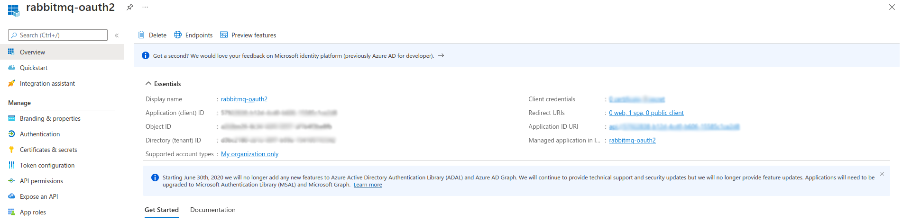
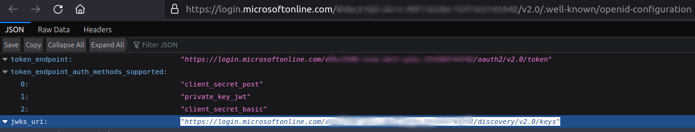
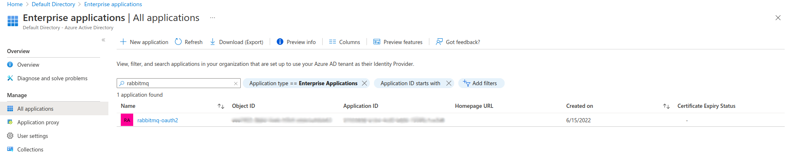

Use Azure Active Directory (Azure AD) as OAuth 2.0 server
Let's test the following 3 OAuth flows:
- Access management UI via a browser :ballot_box_with_check:
- Access management rest api :construction:
- Access AMQP protocol :construction:
Prerequisites to follow this guide
- Have an account in https://portal.azure.com.
- Docker
- Openssl
Register your app
When using Azure AD as OAuth 2.0 server, your client app (in our case RabbitMQ) needs a way to trust the security tokens issued to it by the Microsoft identity platform.
- The first step in establishing that trust is by registering your app with the identity platform in Azure AD.
-
Once you have logged onto your account in Azure Portal, go to Azure Active Directory (use the search bar if you are not able to easily find it).
-
In the left-hand navigation menu, click on App Registrations. Then, select New registration.
-
In the Register an application pane, provide the following informations:
- Name: the name you would like to give to your application (ex: rabbitmq-oauth2)
- Supported Account Types: select Accounts in this organizational directory only (Default Directory only - Single tenant) (you can choose other options if you want to enlarge the audience of your app)
- On the Select a platform drop-down list, select Single-page application (SPA)
- Configure the Redirect URI to: https://localhost:15671/js/oidc-oauth/login-callback.html
⚠️ IMPORTANT: As you may have noticed, Azure AD only allows https links as Redirect URI. To fit this need, you will enable HTTPS for RabbitMQ Management UI, on port 15671. -
Click on Register.

Note the following values, as you will need it later to configure the rabbitmq_auth_backend_oauth2 on RabbitMQ side:
- Directory (tenant ID)
- Application (client) ID
-
Click on the Endpoints tab.
-
On the right pane that has just opened, copy the value of OpenID Connect metadata document (ex: https://login.microsoftonline.com/{TENANT_ID}/v2.0/.well-known/openid-configuration) and open it in your browser.
Note the value of the jwks_uri key (ex: https://login.microsoftonline.com/{TENANT_ID}/discovery/v2.0/keys), as you will also need it later to configure the rabbitmq_auth_backend_oauth2 on RabbitMQ side.

Create OAuth 2.0 roles for your app
App roles are defined by using the Azure portal during the app registration process. When a user signs in to your application, Azure AD emits a roles claim for each role that the user or service principal has been granted (you will have a look at it at the end of this tutorial).
-
Still in Azure Portal, go back to Azure Active Directory home page.
-
In the left-hand menu, click on App Registrations and then click on your application name to open your application Overview pane.
Create a role to allow access to Management UI
-
In the left-hand menu, click on App Roles.
-
Then, click on Create App Role to create an OAuth 2.0 role that will be used to give access to the RabbitMQ Management UI.
📘 More details about how permissions are managed on RabbitMQ when using OAuth 2.0 are available here. -
On the right menu that has just opened, provide the requested information:
- Display Name: the name you want to give to the role (ex: Management UI Admin)
- Allowed member types: Both (Users/Groups + Applications)
- Value: Application_ID.tag:administrator (where Application_ID is the value of the Application (client) ID noted earlier in this tutorial)
- Description: briefly describe what this role aims to (here just to give admin access to the RabbitMQ Management UI)
- Do you want to enable this app role: yes (check the box)
-
Click on Apply.
Create a role to grant configure permission on all resources
-
Click on Create App Role again. You are now going to create an OAuth 2.0 role that will be used to give configure access to all the resources on all the RabbitMQ vhosts.
-
On the right menu that has just opened, fill the form as below:
- Display Name: the name you want to give to the role (ex: Configure All Vhosts)
- Allowed member types: Both (Users/Groups + Applications)
- Value: Application_ID.configure:*/* (where Application_ID is the value of the Application (client) ID noted earlier in this tutorial)
- Description: briefly describe what this role aims to (here to give permissions to configure all resources on all the vhosts available on the RabbitMQ instance)
- Do you want to enable this app role: yes (check the box)
-
Click on Apply.
Assign App Roles to users
Now that some roles have been created for your application, you still need to assign these to some users.
-
Still in Azure Portal, go back to Azure Active Directory home page and, in the left-hand menu, click on Enterprise Applications.
-
In the new left-hand menu, select Manage -> All applications. Use the Search Bar and/or the available filters to find your application.

-
Click on the application you just created, for which you want to assign roles to users/groups, then, in the left-hand navigation menu, Select Manage -> Users and groups.
-
Click on Add user/group to open the Add Assignment pane.
-
Below Users, click on None Selected and, on the Users pane that has just opened on the right, search and select the users/groups you want to assign roles to.
-
Once you've selected users and groups, click on the Select button.
-
Back to the Add assignment pane, below Select a Role, click on None Selected and, on the Select a role pane that has just opened on the right, search and select the role you want to assign to the selected users.
💡 If only one role is available for your application, it would be automatically selected and greyed by default. -
Choose a role (only a single role can be selected at a time), click on the Select button, and click on the Assign button to finalize the assignment of users and groups to the app.
-
Repeat the operations for all the roles you want to assign.
Configure Custom Signing Keys
It is optional to create a signing key for your application. If you create one though, you must append an appid query parameter containing the app ID to the jwks_uri. Otherwise, the standard jwks_uri endpoint will not include the custom signing key and RabbitMQ will not find the signing key to validate the token's signature.
For example, given your application id, {my-app-id} and your tenant {tenant}, the OIDC discovery endpoint uri would be https://login.microsoftonline.com/{tenant}/.well-known/openid-configuration?appid={my-app-id}. The returned payload contains the jwks_uri attribute whose value is something like https://login.microsoftonline.com/{tenant}/discovery/keys?appid=<my-app-idp>. RabbitMQ should be configured with that jwks_uri value.
Configure RabbitMQ to use Azure AD as OAuth 2.0 authentication backend
The configuration on Azure side is done. Next, configure RabbitMQ to use these resources.
rabbitmq.config is a sample RabbitMQ advanced configuration to enable Azure AD as OAuth 2.0 authentication backend for the RabbitMQ Management UI.
Update it with the following values:
- Tenant ID associated to the app that you registered in Azure AD
- Application ID associated to the app that you registered in Azure AD
- Value of the jwks_uri key from https://login.microsoftonline.com/{TENANT_ID}/v2.0/.well-known/openid-configuration
$ vi rabbitmq.config
[
{rabbit, [
{auth_backends, [rabbit_auth_backend_oauth2, rabbit_auth_backend_internal]}
]},
{rabbitmq_management, [
{oauth_enabled, true},
{oauth_client_id, "PUT YOUR AZURE AD APPLICATION ID"},
{oauth_provider_url, "https://login.microsoftonline.com/AZURE_AD_TENANT_ID"}
]},
{rabbitmq_auth_backend_oauth2, [
{resource_server_id, <<"PUT YOUR AZURE AD APPLICATION ID">>},
{extra_scopes_source, <<"roles">>},
{key_config, [
{jwks_url, <<"PUT YOUR AZURE AD JWKS URI VALUE">>}
]}
]}
].
Important: Please update the file available in this tutorial (here), as it will be automatically loaded in the RabbitMQ instance that you are going to deploy later in this tutorial
Generate a TLS Certificate and Key Pair
Important: Remember when you have registered your app on Azure AD that it only allows https protocol for OAuth 2.0 Redirect URI? You will thus need to enable HTTPS for RabbitMQ Management UI amd its underlying API.
For the purpose of this tutorial, you can generate a self-signed certificate/key pair.
Run the following command (depending on your config, you may have to be root):
make build-azure
This generates the following files in conf/azure: * rabbitmq-ca.crt: a custom certificate authority that is used to generate and sign a self signed certificate for RabbitMQ * rabbitmq.crt: a self-signed certificate (cn=localhost) * rabbitmq.key**: the private key associated to the rabbitmq.crt certificate
Start RabbitMQ
Run the following commands to run RabbitMQ docker image:
export MODE=azure make start-rabbitmq
Verify RabbitMQ Management UI access
Go to RabbitMQ Management UI https://localhost:15671. Depending on your browser, ignore the security warnings (raised by the fact that you are using a self-signed certificate) to proceed.
Once on the RabbitMQ Management UI page, click on the Click here to log in button, authenticate with your Azure AD user. The first time, you are likely going to have to give your consent (it depends on the policies applied to Azure AD on your side).
At the end, you should be redirected back to the RabbitMQ Management UI.
Azure AD issues an access token like this one below. The permissions are managed in the roles claim. You have configured RabbitMQ with {extra_scopes_source, <<"roles">>}, which means RabbitMQ uses the scopes in the roles claim to define permissions for a logged-in user.
{
"aud": "30b61ef8-72d7-4e40-88f2-6e16c8d3fd88",
"iss": "https://sts.windows.net/1ffc6121-590e-4aa5-bf47-c348674069cb/",
"iat": 1655740039,
"nbf": 1655740039,
"exp": 1655744211,
"acr": "1",
"aio": "AUQAu/8TAAAAjvwucwL4nZe83vNZvg6A7sAPscI9zsGvRs8EuT7aVhubpmhRnxJ+X7nbkISoP5eBBMxoi2yiCclnH2Ocjjzsqw==",
"amr": [
"wia"
],
"appid": "30b61ef8-72d7-4e40-88f2-6e16c8d3fd88",
"appidacr": "1",
"email": "baptiste.daroit@company.com",
"idp": "https://sts.windows.net/b3f4f7c2-72ce-4192-aba4-d6c7719b5766/",
"in_corp": "true",
"ipaddr": "xxx.xxx.xxx.xxx",
"name": "Baptiste DA ROIT",
"oid": "cf2df3b4-03df-4e1e-b5c0-f232932aaead",
"rh": "0.AR8AgCG80x7L90C1mhVBBXQzQjgoklctsdBMtgYVWFwc4tgfAMQ.",
"roles": [
"30b61ef8-72d7-4e40-88f2-6e16c8d3fd88.tag:monitoring",
"30b61ef8-72d7-4e40-88f2-6e16c8d3fd88.configure:*/*"
],
"scp": "User.Read",
"sub": "6aBzW3a1FOTTrnlZEuC1SmwG0sRjVgQU49DvrYK6Rqg",
"tid": "1ffc6121-590e-4aa5-bf47-c348674069cb",
"unique_name": "baptiste.daroit@company.com",
"uti": "QHqwThTqQEK9iMdnRuD_AA",
"ver": "1.0"
}
Getting Help and Providing Feedback
If you have questions about the contents of this guide or any other topic related to RabbitMQ, don't hesitate to ask them on the RabbitMQ mailing list.
Help Us Improve the Docs <3
If you'd like to contribute an improvement to the site, its source is available on GitHub. Simply fork the repository and submit a pull request. Thank you!
Copyright © 2007-2023 VMware, Inc. or its affiliates. All rights reserved.
Terms of Use •
Privacy •
Trademark Guidelines •
Your California Privacy Rights •
Cookie Settings